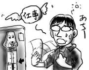
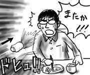
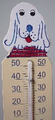

会社にいる間，どうも体がだるくて熱っぽいので，風邪でも引いたかなぁと思っていたのですが，ふと室温を確認すると摂氏30度もありました．夏！めっちゃホリディ気分で仕事も停滞気味です．
しかも何だか，僕の席の周りだけ妙に暑いんです．通りがかった人が「何かここ暑くない？」と話しかけてきますし，近辺の席の人達が「何かここ暑くない？」と常に声をかけあっています．
いくら待っても空調は働かず，徐々に我慢の限界に近付いて来た人達がついに一斉蜂起セポイ(not RPG伝説)！フロアの窓を全開にして回りはじめました．その光景を見て，何だか夏期講習ぽいなぁと思いました(学生気分)．下敷きを団扇代わりにしたりするべき？
屋外の風は涼しくてよいです．室温が摂氏28度まで下がりました(暑い)．

そして室温確認ということでお分かりかと思いますが，先日の温度計は会社に持ち込んで活用しています．意外と好評です(?)．
暇にまかせて大宮をぶらぶらと．毎週こればっかりやっている気がします．人生…(昨日の後遺症)．
歩き疲れたので松屋で夕食．ファーストフードの中で唯一安価に野菜が摂取出来るのが松屋のいいところです．カウンター席で「とりつくね定食」をパクついていると，僕の左側の席を片づけを始めた店員が，盛大にお茶の入ったコップを引っくり返し，攻撃をしかけてきました．思わず足をよじって避けるも，ズボンに被害！店員が謝りながら持って来たタオルでズボンを拭います．やれやれ…．
…と思ったら，今度は右側を片づけ始めた店員が，お茶の入ったコップを盛大にふっ飛ばし，攻撃をしかけてきました．またか！思わず足をよじって避けるも，ズボンに被害！今度は落下して割れたコップの破片というサイドウェポンまで投入です．日常には危険がいっぱい！

店員が謝りながら持って来たタオルでズボンを拭いながら，「どうせならキャッシュバックしてくれないかなぁ」と思いました．まぁそんなわけないんですけどね．
大学友人が仕事で上京しているので，もう一人の大学友人が車でみんなを回収，3人で北へ向かう手はずだったのですが，朝，僕を叩き起こしたのは，彼の「車の鍵がない」という内容の電話でした．ドライブ案は没．
仕方がないので，秋葉原に集合することで決定．中間地点だからですよ！(言い訳)
かくして数カ月ぶりに秋葉の地に降り立ったわけですが，さりとて特にすることもなく，ほとんどの時間をドトールやセガフレードカフェでコーヒーを飲みながら「次どこ行くよ？」「どうするよ？」「…(話が横道へ)」「…(横道へ)」「(我に返って)で，どうするよ？」「どうするよ？」という会話を繰り返すことで過ごしました．アイデアではなく，尿がどんどん出ます．
秋葉にはすることがない(智恵子抄)ということに気付いたので，電車に乗って渋谷へ移動します．ミニシアターに行列をなす人を眺めようという曲がった性根で坂道を練り歩き，Tokyo FM前で公録に列をなす人を見て逆にゲンナリ(弱)．電気館でひと休みして，最終的にタワーレコードに流れ込みました．それでこそ．
電気館で温度計を無料配布していたので１つ所望してみましたが，冷静に考えると温度計なんて要らなかった．やり場に困る．

そして新宿に移動して飲み．車だったら飲めなかった，電車移動最高！というプラス思考で杯を交わします．ところが，話題は「人生」という重めのものにシフトして行き，結果，プラスはマイナスへ．アルコール摂取量もおのずと増え，ふらふらになりながら終電で帰宅しました．家に着くやいなや，服のまま布団へダイブしたはずです．この辺，よく覚えていません．
そして夜明け頃に目が覚めたのですが，気付くと冷凍庫に食いかけの「MEIJI スーパーカップ」が鎮座していました．前回と言い，酔っぱらうとアイスを買って帰る癖はなんとかした方がよい．